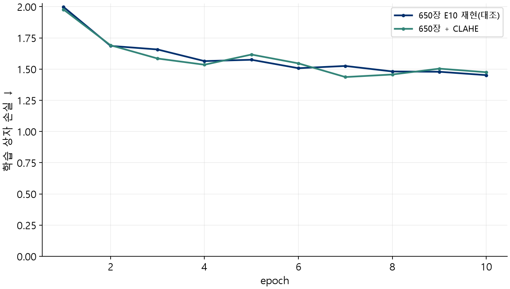
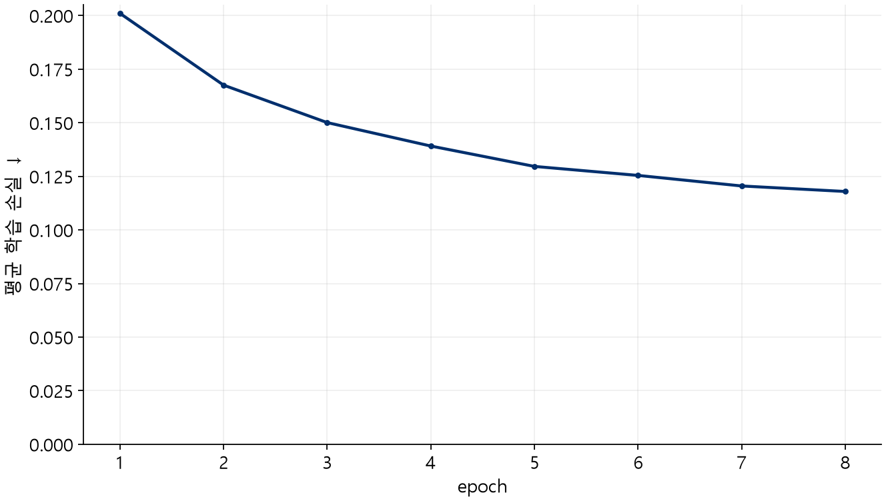
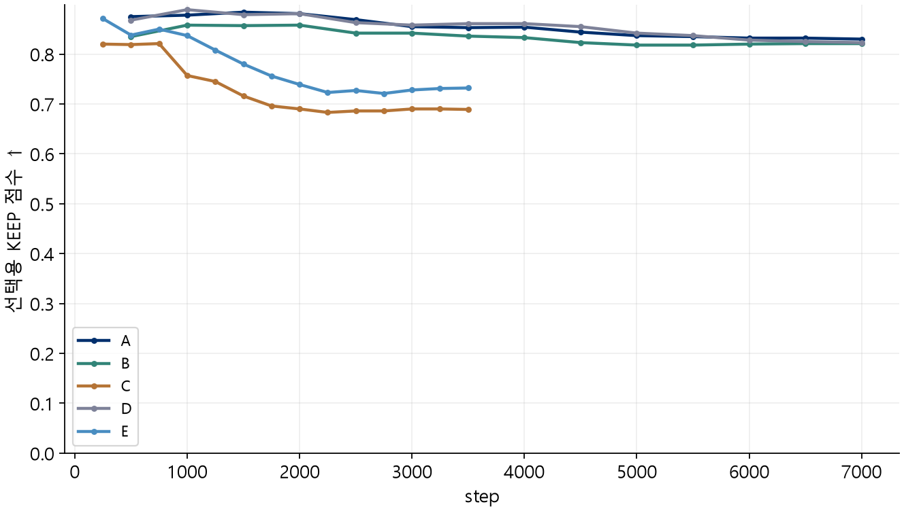
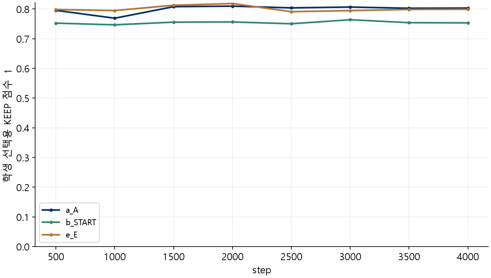
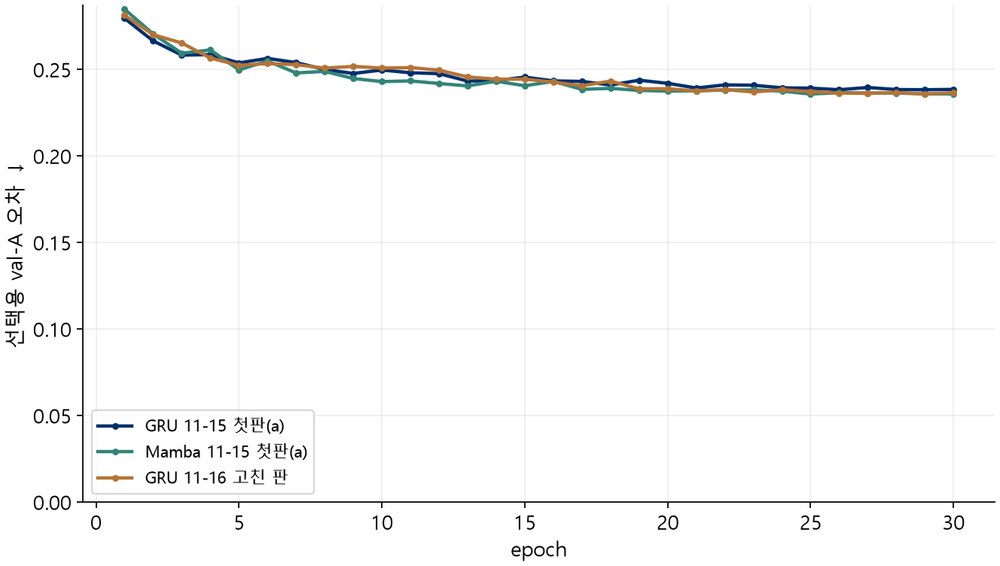
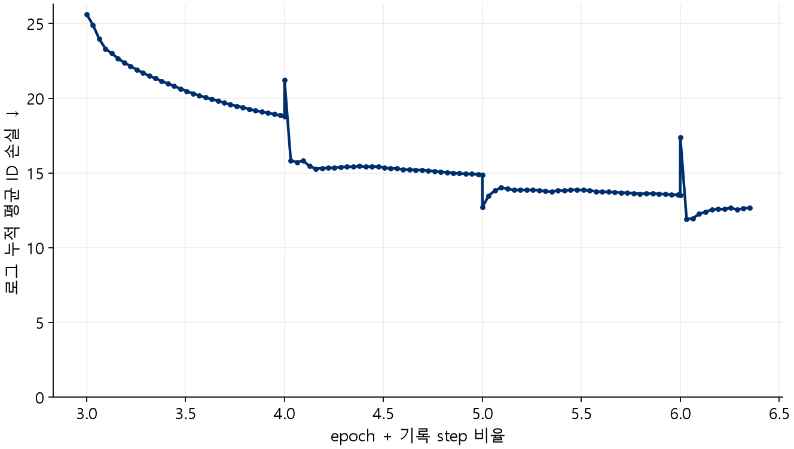

PC 개발 비교
근거 확보IDSW·KeepID·가드 비교
| 확정할 항목 | 후보 A | 후보 B |
|---|---|---|
| 모델 파일 · 가중치 버전 | 시험 전 기입 | 시험 전 기입 |
| 고정 조건 | 해상도·추적기·제어·동선·시간 | 왼쪽과 동일 |
| 검출 | FP/FN 또는 같은 GT의 지표 | 측정 후 기입 |
| 추적·운용 | ID 변경·끊김·재포착 | 측정 후 기입 |
| 시간·자원 | FPS·드롭·계측 구간·온도 | 측정 후 기입 |
| 판정 | 사전 기준에 따라 선택 | 선택 이유·절충 기록 |
| 지표 | 뜻 | 주의 |
|---|---|---|
| AP50–95 ↑ | IoU 기준을 바꿔 집계한 검출 정확도 | 사람 AP와 전체 클래스 mAP 구분 |
| IDF1 ↑ | 실제 신원과 예측 ID의 일관성을 평가 | 정답 신원과 예측 ID의 연결을 집계 |
| IDSW ↓ | GT 사람에 연결된 예측 ID가 바뀐 횟수 | 출력·매칭 규칙과 누락도 함께 비교 |
| HOTA ↑ | 검출과 연관의 품질을 함께 평가 | 시퀀스 평균과 합산 점수 구분 |
| FPS / 지연 / 출력 간격 | 처리량 / 같은 프레임의 경과시간 / 결과 사이 시간 | 세 가지는 서로 다른 지표 |
| p50 / p95 | 중앙값 / 표본 약95%가 그 값 이내 | 최대값·측정 시간과 함께 확인 |
| 환경 · 비교 | IDSW ↓ | IDF1 ↑ | 누락 / 헛출력 |
|---|---|---|---|
| 보드 · ByteTrack 기본 | 5,294 | 41.27% | 16,255 / 27,739 |
| 보드 · ByteTrack 최선 | 2,964 | 49.56% | 13,690 / 29,644 |
| 보드 · OC-SORT 공식 기본 | 425 | 57.73% | 47,178 / 822 |
| 보드 · OC-SORT 조정 | 775 | 64.10% | 15,053 / 19,386 |
| PC · IoU0.2 옵션 없음 | 656 | 66.6% | 별도 비교 |
| PC · Buffered IoU + L1 | 531 | 66.7% | 별도 비교 |
RTP / UDP
JPEG · H.264 수신
UDP BBox · Track ID
영상과 대응 표시
TCP 명령 · 상태
표적 선택 · 모드 전환
상자 조준점: x+w/2, y+αh
화면 목표점: 기본 중앙, 옵션으로 높이 변경
오차: 조준점 − 화면 목표점
P: 현재 오차에 비례
D: 오차 변화에 반응
Ki=0: 적분항 미사용
Pan·Tilt 방향은 따로 결정
SPD는 두 축 공통인 장치 명령
SPD별 실측 속도로 장치 응답 확인
이동 명령으로 계산한 위치 눈금
명령 기반 추정 각도
| 갈래 | 후속 판정 |
|---|---|
| GRU·Mamba | 위치 오차: GRU 0.122 / Kalman 0.110 |
| FastTrackTr | TMOT6편 IDF1 15.3→27.1; 시험 선택지 |
| 시험용 외형 모델 | 라벨9편 IDF1 82.4%; 기존83.0%; 시험용 |
| CLAHE | 별도OTP2 시험: 현장 650장 모델 46.0, 대조44.4, CLAHE45.2 |
| 놓침 위치 오차 / 사람 키 ↓ | 값 |
|---|---|
| Kalman | 0.110 |
| GRU 수정 전 / 후 | 0.336 / 0.122 |
| Mamba 재학습 | 0.127 |
| 과거 후보별 1회 | 공개 자세 모델 | 공개·현장 혼합 학습 모델 |
|---|---|---|
| 야외 전체 검출률 ↑ | 97.45% | 95.55% |
| 실내 프레임당 오검출 ↓ | 0.068 | 0.152 |
설계 목표 · 달성 여부는 계측 경계와 통계로 판정
검출 AP / ID 유지 IDF1 / 번호 변경 IDSW
NPU 호출 · 서버 결과 · 화면 표시를 따로 해석
| 비교할 때 고정하는 것 | 보고할 때 함께 적는 것 |
|---|---|
| 검출기 비교 | 데이터 · 입력 크기 · 가중치 · FP32/INT8 |
| 추적기 비교 | 동일 검출 출력 · 추적 설정 · GT |
| 지연 비교 | 시작/종료 시각 · 시청자 수 · 실제 카메라/재생 |
45.79 − 42.32
27.12 − 19.02
열화상 영상과 사람 상자를 입력해
분류와 위치 예측을 함께 학습
학습 입력 640
장치 입력 640×480
30 epoch 학습 후
검증 점수로 체크포인트 선정

훈련 중 손실이 줄어도
검증 정확도는 별도로 확인
도로 열화상 검출기 · 임의 입력 300회
모델당 약 20초 · 앞 시험과 별개
| 동일 PC 재실행 | 옵션 없음 | Buffered IoU + L1 |
|---|---|---|
| ID 변경 ↓ | 656회 | 531회 |
| 추적 끊김 Frag ↓ | 2,164회 | 1,832회 |
| 정밀도 ↑ | 84.1% | 83.0% |
| IDF1 ↑ | 66.6% | 66.7% |
656 → 531
2,164 → 1,832
84.1 → 83.0
| 60 fps 재생 · 객체 0개 | inflight 1 | inflight 4 |
|---|---|---|
| 완료 처리량 ↑ | 50.22 fps | 60.00 fps |
| 미완료 비율 ↓ | 16.17% | 0.00% |
| 입력 준비→추적 p95 ↓ | 74.42 ms | 22.75 ms |
| 항목 | 변경 전 → 후 |
|---|---|
| 상하 정지 뒤 반전 ↓ | 4 → 1회 |
| 별도 가로 뒤처짐 | 14.3 → 18.6 px |
| 추적기 | 환경 | HOTA | IDF1 | IDSW | 정밀도 / 재현율 |
|---|---|---|---|---|---|
| ByteTrack 최선 | Orange Pi | 합산 없음 | 49.56% | 2,964 | 미기재 |
| OC-SORT 최종 | PC | 59.1 | 66.7% | 531 | 83.0% / 87.7% |
| BoT-SORT 최종 | PC | 60.7 | 67.5% | 566 | 89.5% / 85.3% |
| 번호 | 설정 | 역할 |
|---|---|---|
| 1 | bytetrack.yaml | 비교 기준 |
| 2 | ocsort.yaml | 비교 후보 · ID 연결·재현율 |
| 3 | botsort.yaml | 최종 선정 알고리즘 |
| 후보 | 박스 AP | 관절 AP |
|---|---|---|
| 현장 650장 모델 | 46.28% | 78.35% |
| 표준 증강 | 48.16% | 77.31% |
| 강한 증강 | 45.37% | 78.86% |
| 90° 회전 | 44.68% | 79.27% |
| 전체 재학습 | 45.96% | 78.11% |
| 학습 갈래 | 자료와 학습 순서 |
|---|---|
| 별도 FLIR 검출 실험 | COCO 모델 → 도로 열화상 30회 학습 |
| 현장 상체 검출 | 공개 자세 모델 → 현장 650장으로 10회 추가 학습 |
| 현장 650장 모델 설정 | 값 |
|---|---|
| seed / batch / AMP | 0 / 4 / 끔(FP32) |
| AdamW 초기 lr | 2e-5 |
| 검증 / 별도 시험 | OTP2 934 / 2,151장 |
| 시기·모델 | 출발·역할 |
|---|---|
| 증류 교사 | 공개 열화상 재식별 ThermalTrack 가중치 |
| 파인튜닝 시작점 | LUPerson RGB 자기지도 원본 |
| 검수264 증류B | 실내 튜닝 SOLIDER ep3 고정 교사 |
| 증류E | RepVGG 시험 선택지; 시험 선택지로 등록 |
| 9편 PC FP32 | 장기 뺏김 | 번호 변경 | IDF1 |
|---|---|---|---|
| 기본 RepVGG | 12 | 33 | 83.0% |
| 검수264 RepVGG | 13 | 37 | 83.0% |
| 시험용 증류 모델 | 15 | 42 | 82.4% |
| 구분 | 기록 | 주의 |
|---|---|---|
| 추천 파일 | 검출: 추가 학습 모델 / 외형: 기본 RepVGG | RECOMMENDED.json의 추천 |
| 장치 선택 | 검수264 RepVGG · 적용 이력 | 과거 장치 선택 |
| 현장 650장 모델 | 별도학습·기존운영 기록 | 현장650장으로 학습 |
| 시험용 증류 모델 | 선택 가능 시험 모델 | 시험 선택지 |
| 변경·실카메라 무인 | p95 전 / 후 | 최대 전 / 후 |
|---|---|---|
| DX-RT C API | 26.33 / 24.86 ms | 40.514 / 34.367 ms |
| 두 코어 병렬 회수 | 23.61 / 23.63 ms | 34.648 / 29.158 ms |
| 입력 C++·버퍼 재사용 | 24.07 / 23.25 ms | 36.256 / 39.262 ms |
| 고밀도592장 | p95 | 최대 | 33 ms 초과 |
|---|---|---|---|
| 기준 | 42.52 | 66.87 | 217 |
| 후처리 먼저 | 41.95 | 78.10 | 293 |
| CPU 코어 분리 | 49.04 | 78.73 | 391 |
| 입력512×384 | 30.45 | 63.09 | 16 |
| 9편PC | 장기 뺏김 | 번호 변경 | IDF1 |
|---|---|---|---|
| 끔 | 20 | 43 | 82.3% |
| cost_first | 18 | 41 | 83.2% |
| 둘 다 | 17 | 42 | 82.3% |
| merge_split | 24 | 59 | 74.4% |
| 항목 | 결과·상태 |
|---|---|
| 상체 박스 보정 | 기본 body · 변환표가 없으면 size |
| 키 변화 상위1% | 0.071 → 0.043 |
| 조준 떨림 | 0.0195 → 0.0195 |
| 전신 표시 | ID매칭·평가·짐벌 조준 좌표와 분리 |
| 기능 | 마지막 기록 | 확보 근거 |
|---|---|---|
| 가속150·원거리1.6 | 켬 | PC 모의시험·직접응답실측 |
| 예측fused·guard v2 | 켬 | 가상 fused 재포착 +6%p |
| 좁게보기·하향제한 | 켬 | 기능·회귀시험; 현장재포착 미측정 |
| lead200 | 켬 | 가상 비교 후 유지 여부 검토 |
| search·seek | 끔 | 오인·재포착 기준 미통과 |
53 ms → 겹치기28 ms
36편·6 epoch
ID손실 붕괴 수정
3 epoch
IDF1 15.3 → 27.1






모델 · 해상도 · 장소
사람 크기 · 누락·오검출
정한 기준으로 결과 기록
IDSW·KeepID·가드 비교
가림·재포착·오인 연결
유지 시간·허용 끊김·반복
동시 타일·시험용 추가 학습 모델
p95 25.71 ms
일부 로컬 코드 누락
전체 화면 실행 기록
분할 재연결 작업
가드·추천·보정 변경
| 구분 | 확인된 기록 |
|---|---|
| 재설치 직후 12분 | 33 ms 초과 14,803 / 21,579장 (68.6%) |
| 운영 구성 관리 | 모델·실행 경로·제어 설정 확인 |
| 항목 | 변화·비교 | 원문 보고 구간 |
|---|---|---|
| IDF1 | +4.50%p | +1.26~+10.26 |
| 번호 변경 차이 | 0회 | −9~+10 |
| 양쪽 어깨 신뢰도 ≥0.5 | 기존 모델 92% / 추가 학습 9% | 기준 충족 비율 |
| 실행 조건 | 장치 INT8·분할 | 녹화18편 재생 |